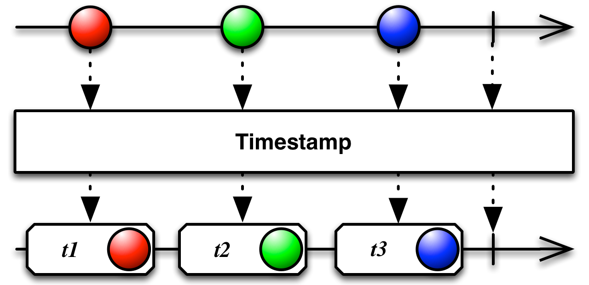

给Observable发射的数据项附加一个时间戳

RxJava中的实现为timestamp，它将一个发射T类型数据的Observable转换为一个发射类型为Timestamped<T>的数据的Observable，每一项都包含数据的原始发射时间。
timestamp
Timestamped<T>
timestamp默认在immediate调度器上执行，但是可以通过参数指定其它的调度器。
immediate